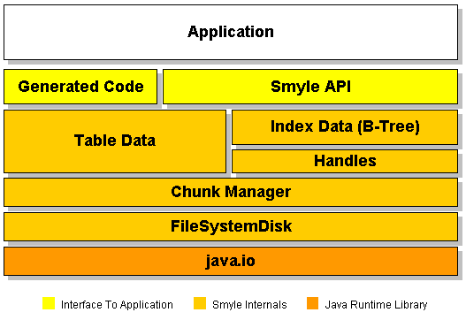

SMYLE: Architecture
Let's look at the different layers, starting from the bottom.
FileSystemDisk
encapsulates access to the file system; is responsible for file naming, creation, access and deletion. Doesn't perform any caching.Smyle employs a "throwaway" storage model. This means that the only operations that can be performed on files are Create and Delete. Put in another way: an existing file can not be modified.
How do write transactions work then? First, all data structures that have been changed are written to one or more new files. Finally, a special file called a master file is written. Master files can be distinguished from ordinary files by a leading "m" (m1234.smy). The new files and the master file will usually contain references to existing files (for those parts of the database that were left unchanged by the transaction).
Every write transaction increases the amount of garbage stored on disk since old files containing now-obsolete data are still around. Occasionally, Smyle performs a garbage collection to delete those files. Sometimes this involves copying quite some amount of data: If a file only partially contains garbage, the live parts must be saved to a new file before deletion of the original file.
The throwaway storage is one of the cornerstones of Smyle's very high reliability. At any given point in time, the file system contains a consistent database. The most recently written master file always determines the official database state. As long as a write transaction is being executed, the previous state remains the official one since no new master file has been written.
The last step of a write transaction, saving the master file, is the only disk operation that must be atomic - this is the moment where the switch between the old state and the new one occurs. The current implementation ensures atomicity by writing the master data to a temporary file and then renaming it to mXXX.smy. - Whether file renaming is actually atomic depends on the operating system. If you need absolute reliabilty, I recommend installing a journalling file system. (There are a number of free JFS available for Linux.)
Chunk Manager
A chunk is an array of bytes; all persistent data structures in Smyle must be representable as (one or more) chunks. The chunk manager organizes chunks in files; this includes tasks such as merging multiple chunks into a single file, maintaining meta structures, garbage collection, and relocating chunks to improve data locality.After a chunk has been stored by the chunk manager, it can be referenced by a 32-bit integer called the chunk index. Chunks are also handled in a "throwaway" fashion; they can only be created and disposed of, but not modified. Chunk index numbers can be reused, though.
The primary implementation, drjava.smyle.core.DefaultChunkManager, features a fairly sophisticated two-level meta structure hierarchy, in pursuit of a balance between access and update efficiency. The chunk manager also performs caching of raw file contents.
Table Data
comprises schema description, the actual records and the element list - an array that holds the chunk index of every table row.
Index Data
Smyle's index structure is an ordinary B-tree; augmented with special code to handle multiple index dimensions.When I added indexing to Smyle, I found that the throwaway model doesn't suit a dynamic structure like a tree too well. The problem is that every node contains references to subnodes. When a node somewhere within the tree is changed, it is assigned a new chunk index. This induces a change in its parent node; that in turn needs a new chunk index too. This continues all the way to the root node and makes updates pretty inefficient.
So I created an intermediate structure, the Handles. Handles are basically a set of modifiable chunks, implemented in terms of regular, unmodifiable chunks. They also provide a caching mechanism for demarshalled objects and tracks whether they are are clean or dirty (changed, but not yet saved). I rewrote the B-tree implementation to use handles, and it became both cleaner and more efficient.
Generated Code
Java sources/classes generated by drjava.smyle.CodeGenerator. Contain fields, accessor/mutator methods, marshalling/unmarshalling code, plus meta classes (filters, constructor classes).
Smyle API
The public part of the Smyle code base (packages drjava.smyle and, in part, drjava.smyle.meta). Provides safe, high-level access to a Smyle store.
|
Author: Stefan Reich (doc@drjava.de) Smyle Homepage: www.drjava.de/smyle |